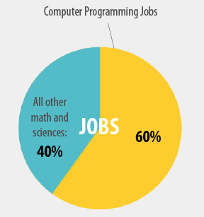

Hacking the Academic Experience
Emily Stolfo
Adjunct Faculty at Columbia, MongoDB Ruby Driver Engineer
@EmStolfo
## Even with a CS degree, I didn't really learn how to program until I was on the job.
# Academia && Hacking
- Teaching Rails at Columbia
- Developing a hacker-centric curriculum
- Getting involved as a hacker
# The term, hacker, is a shibboleth
We will use the term in its positive incarnation.
## As an "agile teacher", I've revamped the curriculum after making several observations.
This type of class is rare, and not just at Columbia.
Knowing Rails doesn't mean just knowing the framework.
# Developing a hacker-centric curriculum
# 5 Hacker Habits
(and how I tried to teach them)
# 2) Able to debug code you didn't write.
# 3) Build something to solve a real-life problem.
# 4) Engage with the community.
# 5) Think critically about code.
### The number of opportunities in tech is growing.

source: code.org
# We need to bring hacking to academia and academia to hacking.
# Getting involved as a hacker
## There are many opportunities to teach
Skillshare
General Assembly
YouTube
TEALs
Hackety hack lessons
Podcast
Rails Girls
# There are many benefits
Your potential colleagues will be better prepared.
No better way to reenforce your knowledge.
Strengthen your profile.
karma++